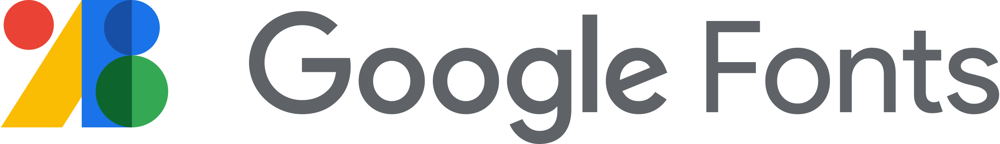
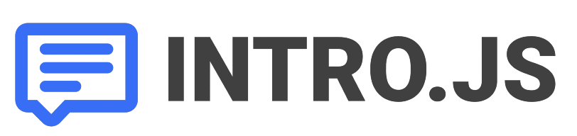

The Log Project is brought to you by Evan Zhou. This website is meant to help people learn about the power of logarithms, as well as how to apply them. It applies an interactive and fun interface, with quizzes, graphs, logarithm-specific calculators, and more.
The Log Project is proudly hosted with Github Pages.